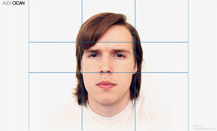
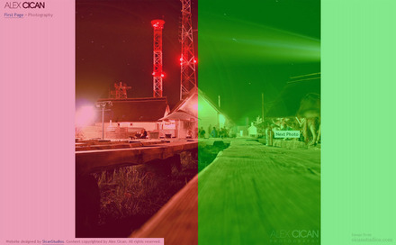
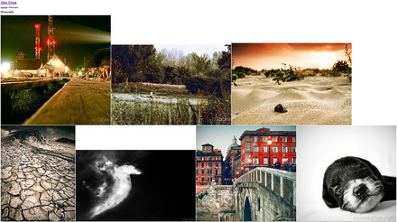
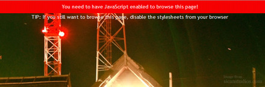
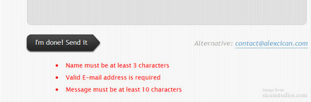

{kind=link}
{kind=link}
{kind=link}
Concept Idea
When I decided to create my personal website, I had to find something personal; after all it was my website. So, I thought what more personal than my own face? So I decided to stick my face and make it a navigation menu. All other elements on the website would have a minimalist approach. I also wanted the photo section to be able to be browsed in full screen without the need of Flash.
Production
I decided to create six pages therefore six menu elements. The way I thought of adding my face was to follow your mouse cursor on the screen with my eyes. I divided my face in nine squares, each representing a new position for my eyes.

{kind=link}
Once you'd move your cursor from one box to the other, I'd swap the photo of my face with another one matching my eyes to the position of your cursor. As you can see, not all squares are equal (therefor not squares). The bottom ones are bigger in height in order to accommodate for users with low resolution size to be able to click the bottom links. I didn't like for the user to scroll my face to get to the bottom links, so I removed the scrollbar. All the images were put in a sprite and optimised for fast loading times. Whilst loading my face, I added a loading GIF image in the image container to let the user know what's happening. I also included a tip for those who did not understand how to navigate when they would hover over my name.

I wanted to create a photoblog sort to speak, where I would post new photos in form of a blog post and be displayed full screen in the photo section. I used the JavaScript and CSS solution by Eirik Backer » to display images in full screen. The entire right half of the screen takes you to the next photo and the entire left part of the screen takes you to the previous photo.

{kind=link}
This created a problem. As I have over 100 photos, it would take forever to load all of them at once, meaning that the user couldn't browse until all the photos have finished downloading. This proved inefficient so I decided to add photos in a form of a photo blog. This meant that the photo page would have a finite number of photos on one page and more than one pages. For starters I added 10 photos on each page.

{kind=link}
This lead to another problem: How would the user move to the next page of photos? I couldn't add text inside the loop because there were complications with the full screen JavaScript. So, I decided to add another image at the end, after the 10 photos that would be a hyperlink to the next page.
{kind=link}
But, in the event of the user clicking the loading link by mistake where in fact they just wanted to browse the 10 photos again it was impossible to correct. They had to go to the next page and then click the back button on their browser to go to the previous page again. A solution to that was to add a JavaScript popup that would request from the user to confirm their action. If they clicked “yes” then the new page would load, if the clicked “no” they would stay on the same page.
Obviously, to be able to browse the photos in full screen, you need to have JavaScript enabled. If the user had JavaScript switched off then a message would be displayed with instruction on how to browse the page without JavaScript.

{kind=link}
If the user would enter wrong information in the contact form, then red messages would be displayed under the form explaining the errors. The user would not be able to send the form until the errors would be corrected. This was implemented using jQuery's Validation Plugin.

{kind=link}
At first sight it appears to be a very simple website. But it has lots of small subtle stuff which makes it a very usable, modern website. I am pleased that it received lots of positive feedback.